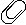
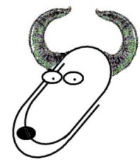

|
 about Paperclips about SocketServer about EEP! Docs Download |
GNU-PaperclipsJava Servlet 2.3 Container |
 |
GNU-Paperclips is the Java Servlet engine of the GNU-Project. The software is licensed under the GPL and so you can download and alter the source code if you want to.GNU-Paperclips was designed to be small, fast and easy to use. In designing this way we have separated some of the components out into sub-projects: socketserver is a thread pool and tcp server and EEP! is a lisp based template language.
GNU-Paperclips fully implements the Servlet API version 2.3. We helped develop the API and influenced some of the decisions taken during it's design.
Paperclips uses the Socket Server API as its TCP handler.
Paperclips provides the EEP! template language as an experimental tool for building websites. EEP! is equivalent to languages like JSP and PHP.
Contributing to Paperclips
Paperclips development occurs on the GNU savannah project development system, our project website can be found here.
If you're interested in using or helping out you can join the GNU-Paperclips mailing list. Subscribe by visting the mailing list admin page or by sending a mail with the subject line:
to the address:subscribepaperclips-discuss-request@gnu.org
GNU-Paperclips Developers
Please send FSF & GNU inquiries & questions to gnu@gnu.org.
There are also other ways to contact the FSF. Please send comments on these web pages to webmasters@gnu.org, send other questions to gnu@gnu.org.Verbatim copying and distribution of this entire article is permitted in any medium, provided this notice is preserved.
Copyright © 1999-2001 Tapsell-Ferrier Limited <nferrier@gnu.org>
Last Modified: 23 March 2001Return to GNU's home page.